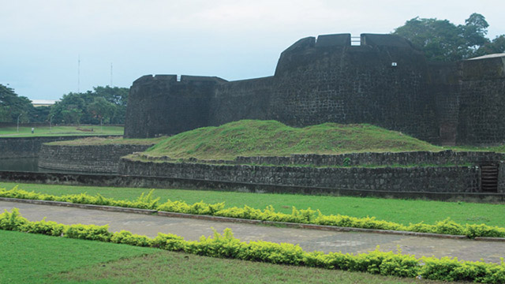

Tipu's Fort
Palakkad
Tipu's Fort is an old fort situated in the heart of Palakkad town of Kerala state, southern India. It was recaptured and rebuilt grandly by Sultan Hyder Ali in 1766 ACE and remains one of the best preserved forts in Kerala.
The Palakkad Fort is said to have existed from very ancient times, but believed to be constructed in present form in 1766 A.D, but little is known of its early history. The local ruler, Palakkad Achchan, was originally a tributary of the Zamorin, but had become independent before the beginning of the eighteenth century. In 1757 he sent a deputation to Hyder Ali seeking help against an invasion threatened by the Zamorin. Hyder Ali seized upon the opportunity to gain possession of a strategically important location such as Palghat and from that time until 1790 the fort was continually in the hands of the Mysore Sultans or the British. It was first taken by the latter in 1768 when Colonel Wood captured it during his raid on Hyder Ali's fortresses, but it was retaken by Haider a few months later. It was recaptured by Colonel Fullarton in 1783, after a siege that lasted eleven days but was abandoned the following year. It later fell into the hands of the Zamorin’s troops. In 1790 it was finally captured by the British under Colonel Stuart. It was renovated and was used as a base for operations that ended with the storming of Srirangapatnam. The fort continued to be garrisoned until the middle of 19th century. In the early 1900s it was converted into a taluk office.
Gallery
